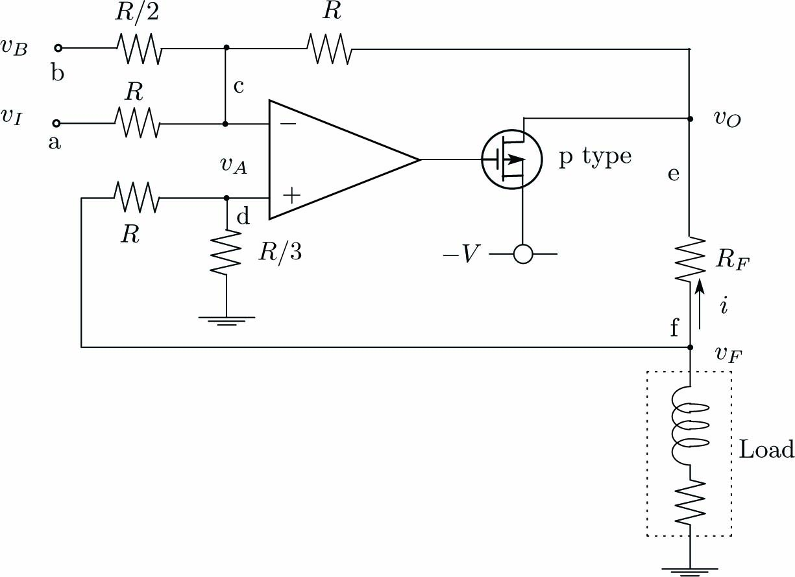

製作した電磁石駆動用パワー出力ボードの写真です。 電磁石駆動用電流フィードバック増幅器12チャンネルと電流増幅器8チャンネルの計20チャンネルの出力があります。

電解効果トランジスタ(MOS FET)を使った電流フィードバック増幅回路について記述します。 電磁石による吸引力を利用するため、電流が正負反転しても吸引しないように正方向吸引用と負方向吸引用の2種類の電流増幅器を装備しています。 この増幅回路には信号入力電圧\(v_I\)とバイアス電圧\(v_B\)の2つとしています。 通常はバイアス\(v_B=0\)です。 また、オペアンプ(作動増幅器)を用いて出力電流を検出するフィードバック抵抗の入力電圧と出力電圧を オペアンプに帰還させる差動演算により、 電磁石のインピーダンスによる入力信号電圧\(v_I\)に対する 電磁石を駆動する出力電流\(i\)の応答遅延を抑制しています。
以下の計算では、オペアンプの入力インピーダンスは無限大、入力(\(+\))と入力(\(-\))の電位差は0V(バーチャルショート)とします。
下図の電解効果トランジスタ(MOS FET)を使った電磁石駆動用(正半波)電流増幅回路が6チャンネルあります。 n型MOS FETは2SK2231を使用しています。
回路図の接点g-c間を流れる電流\(i_{gc}\)と接点c-d間を流れる電流\(i_{cd}\)は等しくなります。 オペアンプの入力接点bcの電位を\(v_A\)、接点dの電位を\(v_O\)としてします。
\begin{align} \frac{v_B-v_A}{R/2}=\frac{v_A-v_O}{R}\label{eq:FormP1} \end{align}回路図の接点a-b間を流れる電流\(i_{ab}\)と接点b-e間を流れる電流\(i_{eb}\)の和は 接点b-g間を流れる電流\(i_{bg}\)と等しくなります。接点eの電位を\(v_F\)としてします。
\begin{align} \frac{v_I-v_A}{R}+\frac{v_F-v_A}{R}=\frac{v_A}{R}\label{eq:FormP2} \end{align}フィードバック抵抗器\(R_F\)の両端の接点d-e間を流れる電流\(i\)とします。
\begin{align} i=\frac{v_O-v_F}{R_F}\label{eq:FormP3} \end{align}式\eqref{eq:FormP1}、\eqref{eq:FormP2}、\eqref{eq:FormP3}から次式が得られます。
\begin{align} \left. \begin{array}{@{\,}c} 2v_B+v_O=3v_A\\ v_I+v_F=3v_A\\ v_O-v_F=R_Fi \end{array} \right\} \label{eq:FormP4} \end{align}式\eqref{eq:FormP4}から次式が得られます。
\begin{align} i=\frac{v_I-2v_B}{R_F}\label{eq:FormP5} \end{align}パワー出力ボードでは\(R=10k\Omega\)、フィードバック抵抗(セメント抵抗)\(R_F=1\Omega\)としています。
下図の電解効果トランジスタ(MOS FET)を使った電磁石駆動用(負半波)電流増幅回路が6チャンネルあります。 p型MOS FETは2SJ377を使用しています。使った電流増幅回路が6チャンネルあります。
回路図の接点a-c間を流れる電流\(i_{ac}\)と接点b-c間を流れる電流\(i_{bc}\)の和は 接点c-e間を流れる電流\(i_{ce}\)と等しくなります。接点eの電位を\(v_F\)としてします。
\begin{align} \frac{v_I-v_A}{R}+\frac{v_B-v_A}{R/2}=\frac{v_A-v_O}{R}\label{eq:FormN1} \end{align}回路図の接点a-c間を流れる電流\(i_{gc}\)と接点c-d間を流れる電流\(i_{cd}\)は等しくなります。 オペアンプの入力接点bcの電位を\(v_A\)、接点dの電位を\(v_O\)としてします。
\begin{align} \frac{v_F-v_A}{R}=\frac{v_A-v_O}{R/3}\label{eq:FormN2} \end{align}フィードバック抵抗器\(R_F\)の両端の接点d-e間を流れる電流\(i\)とします。
\begin{align} i=\frac{v_O-v_F}{R_F}\label{eq:FormN3} \end{align}式\eqref{eq:FormN1}、\eqref{eq:FormN2}、\eqref{eq:FormN3}から次式が得られます。
\begin{align} \left. \begin{array}{@{\,}c} v_I+2v_B+v_O=4v_A\\ v_F=4v_A\\ v_O-v_F=R_Fi \end{array} \right\} \label{eq:FormN4} \end{align}式\eqref{eq:FormN4}から次式が得られます。
\begin{align} i=-\frac{v_I+2v_B}{R_F}\label{eq:FormN5} \end{align}パワー出力ボードでは\(R=10k\Omega\)、フィードバック抵抗(セメント抵抗)\(R_F=1\Omega\)としています。